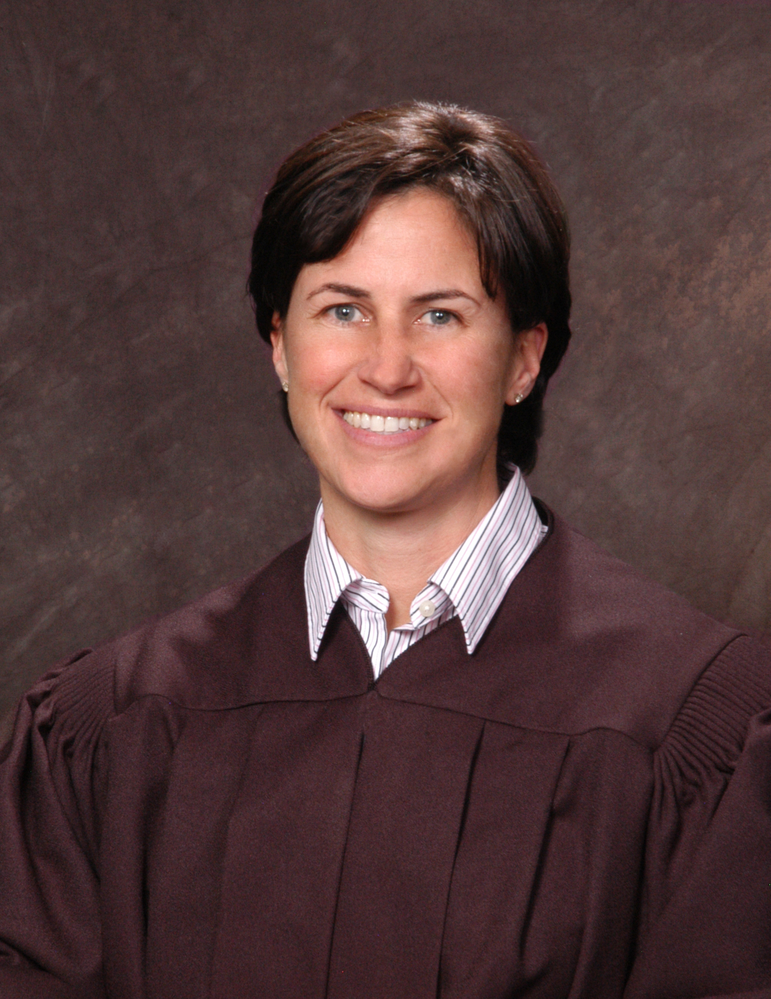

Department 8
Honorable
Lidia S. Stiglich
(775)328-3166
Judicial Assistant: Kathy Rogers - email: Kathy.Rogers@washoecourts.us
Court Clerk: Jennifer Krush - (775)328-3145 Email: Jennifer.Krush@washoecourts.us
Law Clerk: Kathryn Reynolds Email: Kathryn.Reynolds@washoecourts.us
Court Reporter: Isolde Zihn (775)771-5261
zihn@sbcglobal.net

CLICK HERE TO VIEW CALENDAR SETTINGS FOR A PARTICULAR CASE ON A PARTICULAR DAY. (THIS WILL OPEN A NEW WINDOW AND TAKE YOU TO CASE INQUIRY).Biography
Judge Stiglich graduated from the University of California, Berkeley with a Bachelor of
Science in Business Administration, emphasis in Finance. While at UC Berkeley, she
was a member of the intercollegiate softball team. She received her Juris Doctorate from
the University of California, Hastings College of Law. Judge Stiglich was selected for
the Hastings Constitutional Law Quarterly and served as a Note Editor in her third year.
Her own Note was chosen for publication and has been cited favorably by the California
Supreme Court. Judge Stiglich served as an extern for the Honorable Justice Marcel
Poche at the First District Appellate Court.
Judge Stiglich is admitted to practice law in Nevada and California.
Her vast experience includes significant federal and state criminal and civil matters, as
well as administrative law. Judge Stiglich was the managing partner of Stiglich &
Hinckley, LLP prior to being appointed to the Second Judicial District Court in
November 2012 by Nevada Governor Brian Sandoval.
Judge Stiglich spent the early part of her career as a public defender at the San Francisco
Public Defender's Office. In 2002, Judge Stiglich founded Stiglich & Hinckley, LLP, a
law firm committed to federal and state litigation. Judge Stiglich maintained her
commitment to public service and indigent defense. She has served as a member of the
Criminal Justice Act Panels for the District of Nevada and Northern District of
California, which provide representation for indigent defendants in Federal Court. She
was selected to serve on the San Francisco/Oakland Panel Selection Subcommittee, a
group consisting of federal judges and practitioners, who vet and recommend attorneys
for admission to the Northern District of California Criminal Justice Act Panel. She has
also served on the Washoe County Conflicts Panel and San Francisco Lawyer Referral
Panel. Judge Stiglich was named a Super Lawyer for the years 2008,2009, and 2012.
From 2011-2012, Judge Stiglich served as Special Counsel to Lieutenant Governor Brian
K. Krolicki where she advised the Lt. Governor on legal matters related to Economic
Development, Tourism and Cultural Affairs and other special projects.
Judge Stiglich has served as an adjunct law professor at the John F. Kennedy School of
Law, Golden Gate University School of Law and New College of the Law, teaching
courses that included Evidence, Criminal Law, and Practical Clinical Programs.
Judge Stiglich currently serves as co-Chair of the Criminal Justice Advisory Committee
and Civil Bench Bar Committee for the Second Judicial District Court, she is also a
member of the CAEP committee. She is a member of the Washoe County Bar
Association, Northern Nevada Women Lawyers, National Association of Women Judges,
and the District Judges Association and serves as a board member for Friends of Nevada
Mansion, a non-profit entity with the goal of preserving Nevada's Governor's Mansion, a
historic, beautiful and artistic century old dwelling.
Judge Stiglich lives with her partner and their daughter in Reno, Nevada.
Calendar Information for the next 14 days
| Start Time | Case Number & Description | Event Description | Oct-20-2014 |
| 1. 10:00 AM | CR14-1366 - STATE VS. CARLINE LEE MOORE (TN)(D8) | TRIAL - JURY |
| 2. 10:56 AM | CV14-00968 - RIVERWALK TOWER VS CENTRAL CAPITAL, ET AL (D8) | Request for Submission | Oct-22-2014 |
| 3. 08:30 AM | CR14-1052 - STATE VS. STEVEN EUGENE HALL (TN)(D8) | SENTENCING |
| 4. 08:30 AM | CR14-1367 - STATE VS. ISRAEL RAFAEL PEREZ (TN)(D8) | MOTION TO CONFIRM TRIAL |
| 5. 08:30 AM | CR14-1474 - STATE VS. JESSE MICHAEL TODD, II (TN)(D8) | ENTRY OF PLEA |
| 6. 08:30 AM | CR14-1065 - STATE VS. DAVID LEE MILLER, JR (TN)(D8) | SENTENCING |
| 7. 08:30 AM | CR13-0797 - STATE VS CAMERON DOYLE CHURCH (TN) (D8) | PROBATION REVIEW HEARING |
| 8. 08:30 AM | CR14-0046 - STATE VS. BRIANNA DAJONIQUE THOMAS (D8) | 458 REVIEW HEARING |
| 9. 09:00 AM | CR12-2019 - STATE VS. AARON MARCUS PAUL BUCKLEY (TN) (VC) | SENTENCING |
| 10. 09:00 AM | CR14-0169 - STATE VS. SALVADOR ROMERO (D9) | ENTRY OF PLEA |
| 11. 09:00 AM | CR14-0911 - STATE VS. TWILA BENSON (TN) (D9) | SENTENCING |
| 12. 09:00 AM | CR13-1646 - STATE VS HOPE HAWKINSON (D9) | SENTENCING |
| 13. 09:00 AM | CR14-1122 - STATE VS. RICKY ALLEN STAFFORD, JR (D9) | SENTENCING |
| 14. 09:00 AM | CR14-1196 - STATE VS. MICHAEL ANTHONY THIBOS (TN) (D9) | SENTENCING | Oct-27-2014 |
| 15. 08:30 AM | CR14-1029 - STATE VS. JOHN RUSSELL ODIN (D6) | SENTENCING |
| 16. 08:30 AM | CR14-0549 - STATE VS. BRENNEN EDWARD ADAMS (TN)(D8) | STATUS HEARING |
| 17. 08:30 AM | CR14-0963 - STATE VS. RYAN TAYLOR LINDSEY (D8) | PROBATION REVIEW HEARING |
| 18. 08:30 AM | CR14-1583 - STATE VS. WILLIAM CHARLES SMITH (D8) | ARRAIGNMENT |
| 19. 08:30 AM | CR14-1573 - STATE VS DAVID LEE MILLER, JR. (D8) | ARRAIGNMENT |
| 20. 08:30 AM | CR12-0659 - STATE VS. EVAN ZACHARY ENCOE (TN) (D8) | MOTION -PROBATION REVOCATION |
| 21. 13:30 PM | CV13-01802 - UMPQUA BANK VS. BELL PROPERTIES III, LTD ETAL (D8) | ORAL ARGUMENTS | Oct-29-2014 |
| 22. 08:30 AM | CR14-1368 - STATE VS. BRIAN JOSEPH HAMBLET (TN)(D8) | MOTION TO CONFIRM TRIAL |
| 23. 08:30 AM | CR14-1595A - STATE VS. BRANDON JAMES RIEKEN (D8) | ARRAIGNMENT |
| 24. 08:30 AM | CR14-1592 - STATE VS. LUCAS EVERETT CLARK (D8) | ARRAIGNMENT |
| 25. 08:30 AM | CR14-1596 - STATE VS. GARY WAYNE PHILLIPS (D8) | ARRAIGNMENT |
| 26. 08:30 AM | CR14-1590 - STATE VS. NATHAN ALLEN SAMUEL HUNTER (D8) | ARRAIGNMENT |
| 27. 08:30 AM | CR14-1170 - STATE VS. RICHARD PRESTON (D8) | SENTENCING |
| 28. 08:30 AM | CR14-1595B - STATE VS. LUCAS EVERETT CLARK (D8) | ARRAIGNMENT |
| 29. 08:30 AM | CR14-1009 - STATE VS. LARRY ANTHONY CRESPO (TN)(D8) | MOTION TO CONFIRM TRIAL |
| 30. 08:30 AM | CR14-1593 - STATE VS. CURTIS HERBERT (D8) | ARRAIGNMENT |
| 31. 08:30 AM | CR14-1599 - STATE VS. LUCAS HERRARA BROWN (D8) | ARRAIGNMENT |
| 32. 13:30 PM | CR13-1889 - STATE VS. ROBERT MICHAEL OWENS (TN)(D8) | EXHIBITS TO BE MARKED W/CLERK |
| 33. 13:30 PM | CR13-1889 - STATE VS. ROBERT MICHAEL OWENS (TN)(D8) | MOTION TO CONFIRM TRIAL | Oct-30-2014 |
| 34. 13:30 PM | CV14-01549 - DAVID SHENNAN VS. BEST HARDWOOD FLOORING, LLC (D8) | MAND PRETRIAL STATUS CONF |
| 35. 14:00 PM | CV12-02809 - ROBERT BAHLMAN ETAL VS. N LAKE TAHOE PROTECTION(D6 | ORAL ARGUMENTS | Nov-03-2014 |
| 36. 08:30 AM | CR07-2561 - STATE VS. RYAN EUGENE SMALL (D8) | SENTENCING |
| 37. 08:30 AM | CR14-1101C - STATE VS. ALICIA MARIE NUTTERFIELD (TN)(D8) | STATUS HEARING |
| 38. 08:30 AM | CR14-1058 - STATE VS. ROBERT AARON STOVER (TN)(D8) | SENTENCING |
| 39. 08:30 AM | CR14-1617 - STATE VS COREY GOMEZ (D8) | ARRAIGNMENT |
| 40. 08:30 AM | CR13-1442 - STATE VS. JOSE RENE DERAS (TN) (D8) | MOTION -PROBATION REVOCATION |
| 41. 08:30 AM | CR14-0784B - STATE VS. STEVIELYNN BOYER (TN)D8) | 458 REVIEW HEARING |
| 42. 08:30 AM | CR14-1303 - STATE VS. JAMIE ANGELA RUSH (TN)(D8) | SENTENCING |
| 43. 08:30 AM | CR14-1276 - STATE VS. MELVIN HOOPER (TN)(D8) | STATUS HEARING |
| 44. 10:00 AM | CR13-0797 - STATE VS CAMERON DOYLE CHURCH (TN) (D8) | HEARING... |